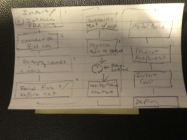

Data science and the elements of artificial intelligence and machine learning are hard...or so we are told. But what if they weren't? Script Farmer creates deliberate, modular, objects that allown anyone to harness data science, machine learning, and artificial intelligence.
An introductory object ensures these tools would be useful for you. A chatbot would serve in this purpose. The chatbot could also display applicable objects to match the user's intent.
All of the objects would be standardized to accept and output a common data format, so each could manipulate the data the other would produce.
Finally, the modular objects would need to be compiled and stored in a container for the user.
Contact me with questions. My email.
Back to top